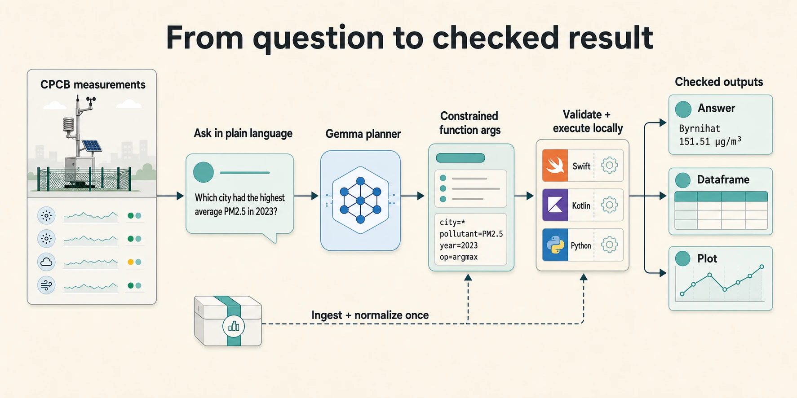
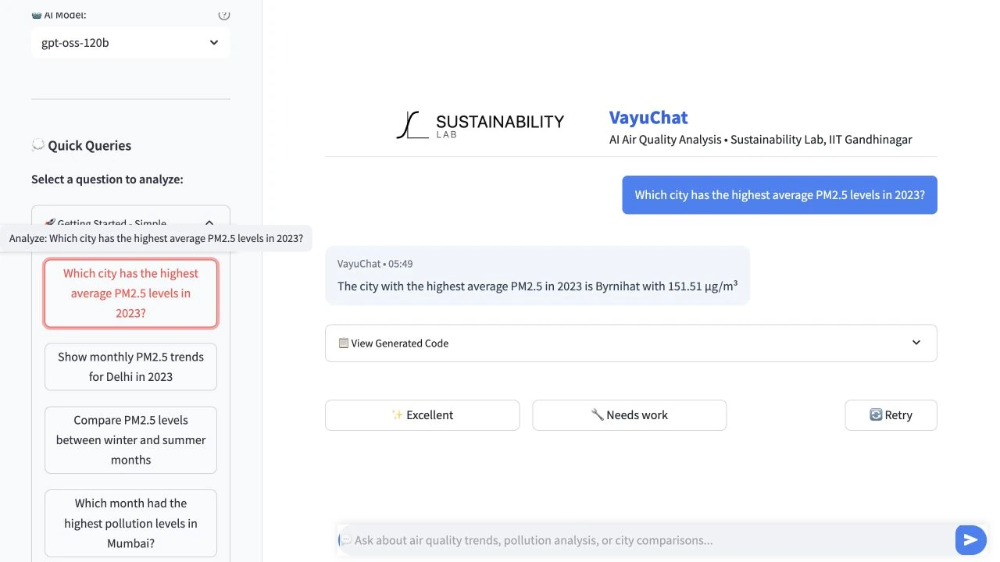
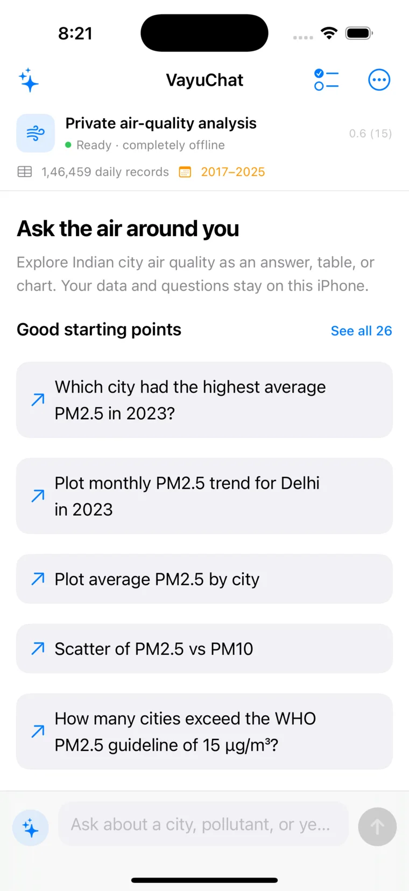
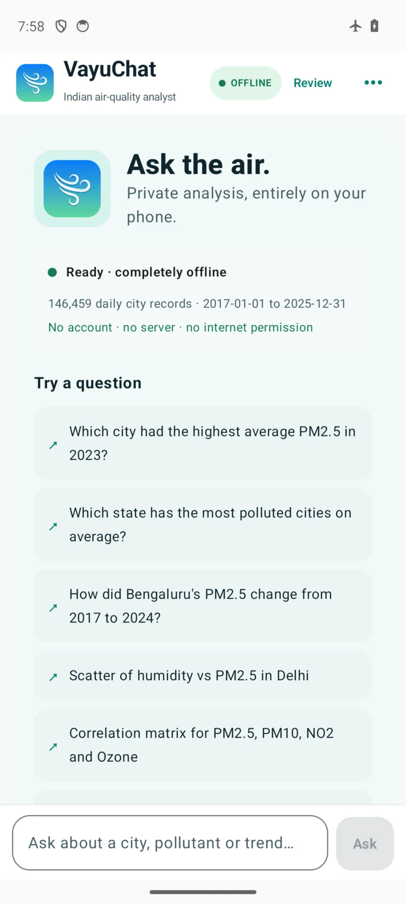
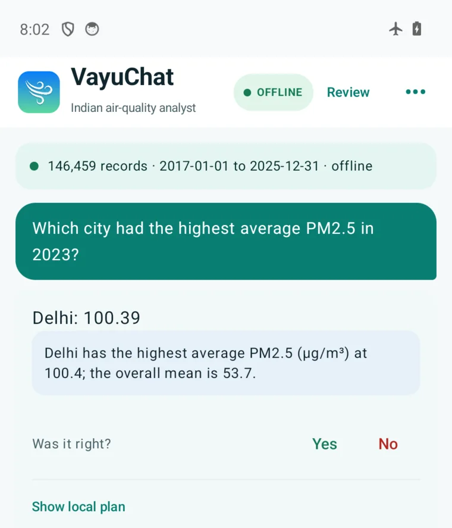
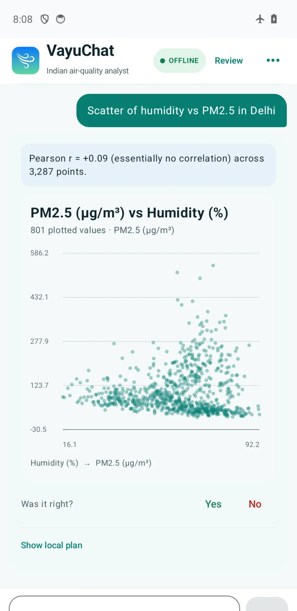
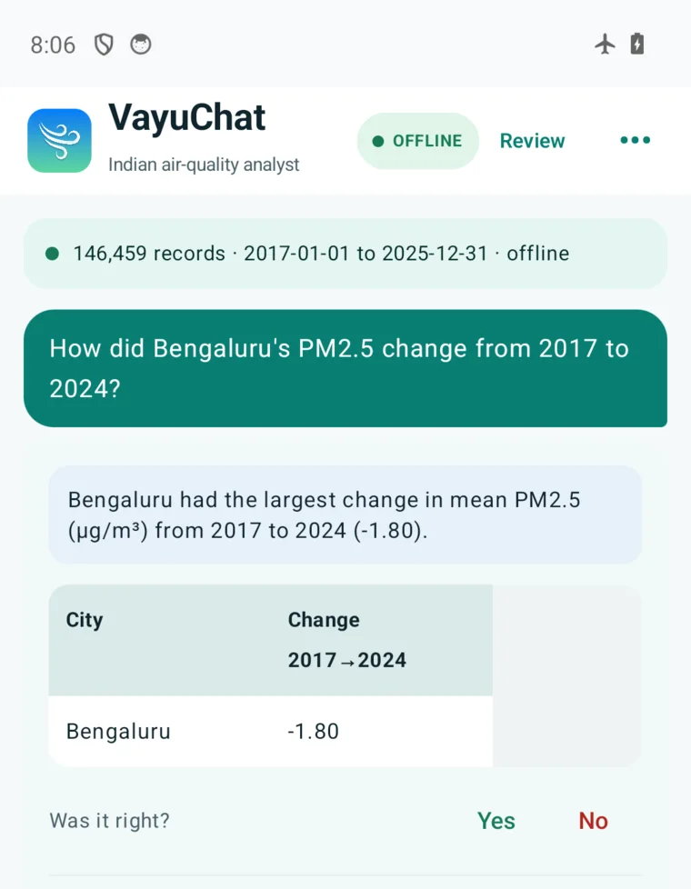

Hosted app
Research workflow
Model selection, guided queries, and executable analysis in Python.
One system · three runtimes
VayuChat turns plain-language questions into checked analysis. The iPhone and Android apps bundle a small Gemma model and the data; the hosted research app runs the same plan-and-execute idea in Python.


iPhone · local Gemma

Android · local Gemma

How it works
The language model never invents the final number. It emits a small, constrained plan; the runtime validates the arguments, computes against the ingested measurements, and renders the result.
["a","city","pm25","argmax",…]SwiftKotlinPython
Real outputs
These are unedited captures from the Android app in airplane mode. The same compact plan format drives native tables and charts on iPhone.



Watch it work
Three short demonstrations cover the research interface and both native apps. The phone recordings show the analysis continuing offline.
Model selection, guided queries, and executable analysis in Python.
Airplane mode, answers, dataframes, and Swift Charts.
Airplane mode, a direct answer, dataframe, plot, and audit.
Apps
The native pilots bundle the model and data. Your question, intermediate plan, and result stay on the device unless you deliberately copy or share them.
The iPhone TestFlight button will appear only after Apple clears build 15 for external testers. Android is a direct-testing alpha; the published APK SHA-256 begins 65e9bcf4.
Research
VayuBench evaluates whether a model can produce an executable program and the correct answer—not merely fluent text.
Primary paper · CODS 2025
The benchmark contains 5,000 natural-language queries paired with verified programs across seven query families. The study evaluates 13 open models under a common schema-aware protocol and follows the work through to VayuChat.
@inproceedings{acharya2025vayubench,
title={VayuBench and VayuChat: Executable Benchmarking and Deployment of LLMs for Multi-Dataset Air Quality Analytics},
author={Acharya, Vedant and Pisharodi, Abhay and Pasi, Ratnesh and Mondal, Rishabh and Batra, Nipun},
booktitle={13th ACM IKDD International Conference on Data Science},
year={2025},
doi={10.1145/3799830.3799884}
}